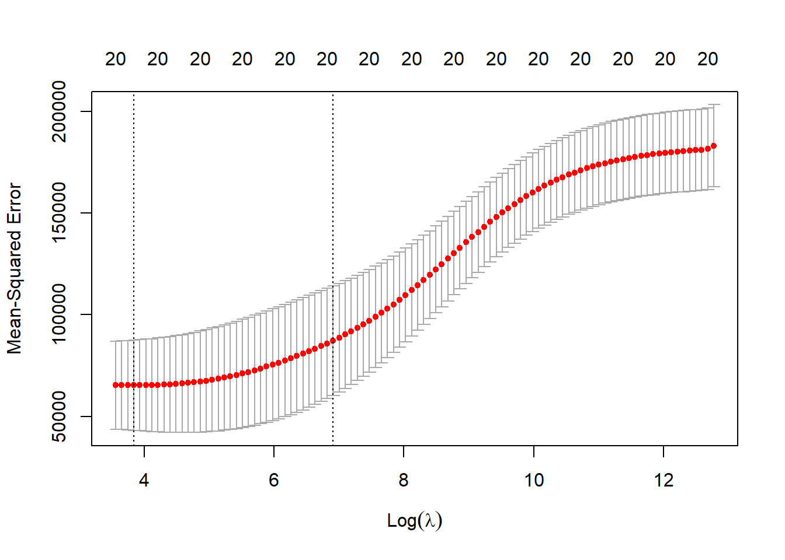

Chapter 18 Regularization
Reference: Ch6 in An introduction to Statistical Leraning with applications in R by James, Witten, Hastie and Tibshirani.
An introduction to glmnet: https://glmnet.stanford.edu/articles/glmnet.html
For theory behind the methods, study Statistical Learning I and II (STAT462, STAT457).
Packages used: glmnet, ISLR2
Introduction:
Regularization (or shrinkage) involves fitting a model where the estimated parameters are shrunken towards zero. The aim is to reduce overfitting and improve prediction accuracy.
Depending on the regularization method, some of the parameters may be estimated to be exactly zero (which thus improve model interpretability). Hence, regularization methods can also perform variable selection.
Variable selection here means the process of determining which variables to be included in your model. Examples that we have seen before are the forward stepwise regression, backward stepwise regression and the best subset selection.
Regularization is not limited to linear regression models (although we describe this idea using linear regression in this chpater). It is a general method that is also used in other methods as well (e.g., logistic regression, deep learning)
18.1 Ridge Regression
In linear regression, we minimize \[\begin{equation*} \sum^n_{i=1} \bigg( y_i -\beta_0 - \sum^p_{j=1} \beta_j x_{ij} \bigg)^2. \end{equation*}\] In ridge regression, we minimize \[\begin{equation*} \sum^n_{i=1} \bigg( y_i -\beta_0 - \sum^p_{j=1} \beta_j x_{ij} \bigg)^2 + \lambda \sum^p_{j=1} \beta^2_j, \end{equation*}\] where \(\lambda \geq 0\) is a tuning parameter to be determined separately.
The term \(\lambda \sum_j \beta^2_j\) is called a shrinkage penalty. This penalty is small when \(\beta_j\)’s are close to \(0\). Thus, it has the effect of shrinking the estimates of \(\beta_j\) towards \(0\).
\(\lambda\) is a tuning parameter that serves to control the relative impact of the shrinkage penalty.
For each value of \(\lambda\), there is a corresponding minimizer \(\hat{\beta}^R_\lambda\) of the loss function above in the ridge regression.
Note that we do not shrink the intercept \(\beta_0\).
Some properties of ridge regression:
Efficient to compute
Work also when \(p > n\). That is, when the number of covariates is greater than the sample size (least squares does not work in this case)
Does not select a particular model (i.e., include all \(p\) predictors in the final model)
Ridge regression usually performs better than the least squares because of the bias-variance trade-off. As \(\lambda\) increases, the bias increases but variance decreases.
Ridge regression works best in situations where the least squares estimates have high variance
18.2 LASSO
The lasso coefficients \(\hat{\beta}^L_\lambda\) minimize the quantity
\[\begin{equation*} \sum^n_{i=1} \bigg( y_i -\beta_0 - \sum^p_{j=1} \beta_j x_{ij} \bigg)^2 + \lambda \sum^p_{j=1} |\beta_j|. \end{equation*}\]
Recall the \(l_1\) norm of the vector \(\beta\) is given by \(||\beta||_1 = \sum^p_{j=1}|\beta_j|\). The lasso penalty \(\lambda \sum^p_{i=1}|\beta_j|\) is an \(l_1\) penalty.
The ridge penalty is an \(l_2\) penalty.
As with ridge regression, the lasso shrinks the coefficient estiamtes towards \(0\). However, the \(l_1\) penalty has the effect of forcing some of the coefficient estimates to be exactly equal to \(0\).
Hence, the lasso can be used to perform variable selection. Model generated from the lasso is easier to inerpret than those generated from ridge regression because of this.
A sparse model is a model that only involves a fraction of all the variables. Thus, lasso yields sparse models.
18.3 Selecting the tuning parameter
A standard way to choose the tuning parameter \(\lambda\) is to use cross-validation.
Steps:
Choose a grid of \(\lambda\) values
Compute the cross-vlidation error for each value of \(\lambda\)
Select the tuning parameter value for which the cross-validation error is smallest
Refit the model using all of the data and the selected value of the tuning parameter
18.4 glmnet
To perform ridge regression and the lasso in R, we can use the glmnet package. The main function in this package is glmnet(). In this case of linear regression, glmnet() solves the problem
\[\begin{equation*}
\min_{\beta_0, \beta} \frac{1}{n} \sum^n_{i=1} (y_i - \beta_0 - x^T_i \beta)^2 + \lambda\{
(1-\alpha) ||\beta||^2_2/2 + \alpha ||\beta||_1 \}.
\end{equation*}\]
This penalty is called the elastic net penalty. When \(\alpha = 0\), it becomes the ridge penalty. When \(\alpha = 1\), it becomes the lasso penalty.
We will illustrate how to perform ridge regression and lasso using Hitters data set from the package ISLR2. The data set contains \(322\) observations of major league players. The aim is to predict the salary of the plyer using other information about the players.
The syntax of glmnet() is different from lm() or glm(). In particular, we have to provide the x and y separately in the function.
In general, a data set may have some categorical variables. We can prepare the data set to be used in glmnet() using model.matrix().
The data set contains three factors: League, Division, NewLeague:
library(ISLR2)
# first remove rows with missing values
Hitters <- na.omit(Hitters)
head(Hitters[, c("League", "Division", "NewLeague")])
## League Division NewLeague
## -Alan Ashby N W N
## -Alvin Davis A W A
## -Andre Dawson N E N
## -Andres Galarraga N E N
## -Alfredo Griffin A W A
## -Al Newman N E AUse model.matrix to prepare the data. The first column is the intercept and we remove it when putting into glmnet().
x <- model.matrix(Salary ~., Hitters)[, -1]
y <- Hitters$Salary
head(x[, c("LeagueN", "DivisionW", "NewLeagueN")])
## LeagueN DivisionW NewLeagueN
## -Alan Ashby 1 1 1
## -Alvin Davis 0 1 0
## -Andre Dawson 1 0 1
## -Andres Galarraga 1 0 1
## -Alfredo Griffin 0 1 0
## -Al Newman 1 0 0Generate random indexes to split the data into training and testing data:
set.seed(1)
index <- sample(nrow(x), nrow(x) * 0.5) # use half of data as training data18.4.1 Ridge Regression
Perform ridge regression with cross-validation. The default option is \(10\)-fold CV. Note that by default, the variables will be scaled automatically in the function.
library(glmnet)
ridge_cv <- cv.glmnet(x[index, ], y[index], alpha = 0)
plot(ridge_cv)
The above plot shows the cross-validation error (the mean squared error computed using the CV approach) with different values of \(\lambda\) in the \(\ln\) scale. We can pick the \(\lambda\) that results in the smallest cross-validation error using the following code:
best_lambda <- ridge_cv$lambda.minFit the ridge regression for the training data set with the “best” lambda and evaluate the test error.
# ridge regression with a particular value of lambda
ridge_best <- glmnet(x[index, ], y[index], alpha = 0, lambda = best_lambda)
# form predictions
ridge_pred <- predict(ridge_best, s = best_lambda, newx = x[-index, ])
# test error
mean((ridge_pred - y[-index])^2)
## [1] 82978.09Coefficients (when the variables are in the original scale):
predict(ridge_best, type = "coefficients")[1:ncol(x), ]
## (Intercept) AtBat Hits HmRun Runs RBI
## 734.98187060 -0.39771682 0.09856678 1.90816636 1.12520209 1.12817707
## Walks Years CAtBat CHits CHmRun CRuns
## 1.84214466 -1.07801226 -0.01043714 0.04680252 0.29728579 0.06784558
## CRBI CWalks LeagueN DivisionW PutOuts Assists
## 0.10195270 0.22099398 52.85489693 -87.77696817 0.02659380 0.25831844
## Errors NewLeagueN
## -2.60678334 -21.39048354Compare with the least squares approach
ls_fit <- lm(Salary ~ ., data = Hitters[index, ])
ls_pred <- predict(ls_fit, Hitters[-index, ])
mean((ls_pred - y[-index])^2)
## [1] 93373.95We can see that the test error obtained from ridge regression is smaller.
18.4.2 LASSO
The code to perform LASSO is essentially the same as that in ridge regression. We only need to change the value of alpha to 1.
lasso_cv <- cv.glmnet(x[index, ], y[index], alpha = 1)
plot(lasso_cv)
# find the best lambda
best_lambda <- lasso_cv$lambda.min
lasso_best <- glmnet(x[index, ], y[index], alpha = 1, lambda = best_lambda)
# form predictions
lasso_pred <- predict(lasso_best, s = best_lambda, newx = x[-index, ])
# test error
mean((lasso_pred - y[-index])^2)
## [1] 85771.99The test error obtained from lasso is also smaller than that obtained from the least squares approach.
Coefficients (when the variables are in the original scale):
predict(lasso_best, type = "coefficients")[1:ncol(x), ]
## (Intercept) AtBat Hits HmRun Runs RBI Walks
## 820.2506544 0.0000000 0.0000000 0.0000000 0.0000000 0.8252274 0.7905141
## Years CAtBat CHits CHmRun CRuns CRBI CWalks
## 0.0000000 0.0000000 0.0000000 0.1572202 0.0000000 0.0000000 0.3894920
## LeagueN DivisionW PutOuts Assists Errors NewLeagueN
## 0.0000000 -59.0032158 0.0000000 0.0000000 0.0000000 0.0000000We can see that the lasso results in a model where the coefficient estimates are sparse: \(7\) of the estimates are exactly \(0\).
Variable selection property of LASSO
In the following toy example, the response is only related to the first five features \(X_1,\ldots,X_5\): \[\begin{equation*} Y_i = 1 + 3(X_{i1} + \ldots +X_{i5}) + \varepsilon_i \end{equation*}\] We apply LASSO and see that LASSO can select the true model, that is, a linear model that only includes \(X_1,\ldots,X_5\).
set.seed(2)
x <- matrix(rnorm(500 * 20), nrow = 500, ncol = 20)
y <- 1 + rowSums(x[, 1:5]) * 3 + rnorm(500, 0, 0.1)
# Perform CV to find the best lambda
lasso_cv <- cv.glmnet(x, y, alpha = 1)
best_lambda <- lasso_cv$lambda.min
# Refit the data with the best lambda
lasso_best <- glmnet(x, y, lambda = best_lambda, alpha = 1)
# Estimated regression coefficients
predict(lasso_best, type = "coefficients")[, 1]
## (Intercept) V1 V2 V3 V4 V5 V6
## 1.023367 2.926722 2.912596 2.917734 2.928092 2.921180 0.000000
## V7 V8 V9 V10 V11 V12 V13
## 0.000000 0.000000 0.000000 0.000000 0.000000 0.000000 0.000000
## V14 V15 V16 V17 V18 V19 V20
## 0.000000 0.000000 0.000000 0.000000 0.000000 0.000000 0.000000